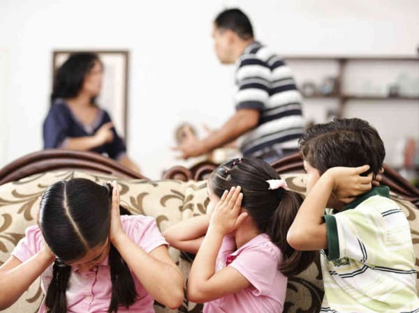
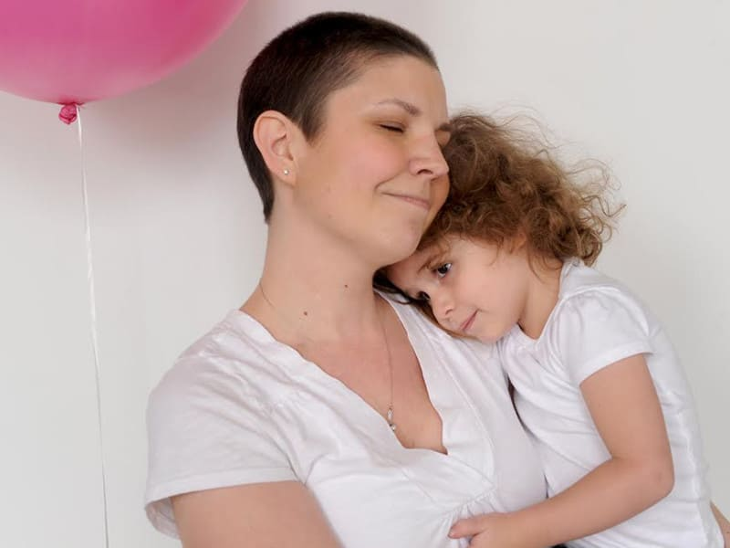
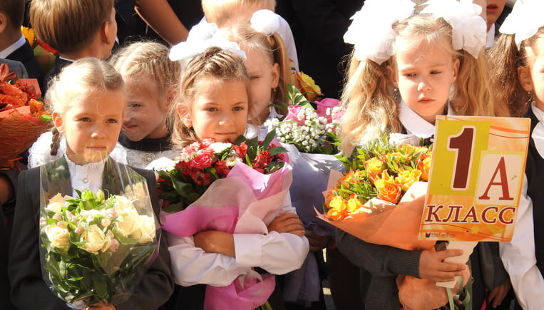
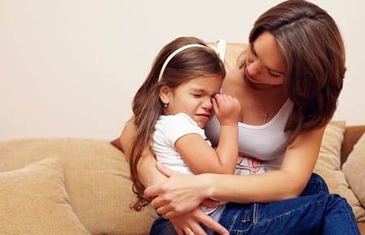
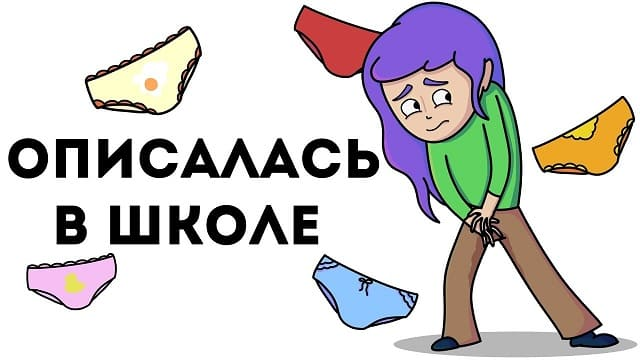
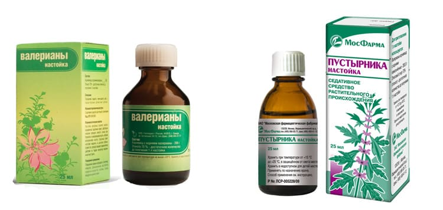

Ваш ребенок стал часто мочиться, вы обратились к педиатру, и он исключил цистит? То есть в общем анализе мочи никаких изменений, симптомов дизурии, лихорадки нет? При этом ребенок днем ходит в туалет каждые 10 минут понемногу, а ночью спокойно спит, будто полностью здоров?
Знакомьтесь, это поллакиурия. Этот синдром еще называют нейрогенной дисфункцией мочевого пузыря, нейрогенным мочевым пузырем, мочевым неврозом и так далее. Однако суть этого явления одна. В этой главе я буду называть его поллакиурией, для краткости.
ЧТО ТАКОЕ ПОЛЛАКИУРИЯ?
Наиболее часто мочевой невроз проявляет себя в возрасте 4–5 лет. Вы заметили, что:
✗ ребенок вдруг начинает мочиться каждые 10–30 минут, количество мочеиспусканий в сутки достигает 30–50 раз;
✗ ребенок за одно мочеиспускание выделяет очень небольшое количество мочи;
✗ мочеиспускание у ребенка совершенно безболезненное;
✗ ребенок не пьет чрезмерного количества жидкости;
✗ ребенок уже обучен навыкам туалета и был опрятен на момент начала болезни;
✗ частое мочеиспускание не беспокоит ребенка во время сна (важный отличительный признак).
ПРИЧИНЫ ВОЗНИКНОВЕНИЯ
Частое мочеиспускание иногда сопровождает эмоциональное напряжение, то есть проявляется тогда, когда ваш ребенок находится под психологическим давлением, хотя это не является обязательным условием. Симптомы являются непроизвольными, непреднамеренными. Частое мочеиспускание может начаться через 1 или 2 дня после стрессового события или изменений в обычном течении жизни ребенка. Вы можете усугубить проблему, чрезмерно беспокоясь об этой болезни. Наказания, упреки, насмешки также усугубляют симптомы. Хотя за этим состоянием крайне редко скрывается серьезная болезнь, ребенок все же должен быть осмотрен врачом. Единственное исследование, которое потребуется, – это общий анализ мочи для исключения цистита. Необходимости в рентгенологическом обследовании нет.
ПРОДОЛЖИТЕЛЬНОСТЬ
Это заболевание абсолютно безвредно и проходит самостоятельно. Иногда симптомы проходят уже спустя 1–4 недели. Но чаще заболевание длится 2 или 3 месяца. Описаны редкие случаи, когда болезнь тянулась 5 месяцев. Во всех случаях заболевание проходило самостоятельно, без каких-либо последствий. У некоторых детей могут быть рецидивы этого заболевания, то есть оно может повториться уже после полного выздоровления.
КАК ПОМОЧЬ РЕБЕНКУ
1. Убедите ребенка, что он физически здоров. Скажите ребенку, что его тело – почки, мочевой пузырь, все, о чем он беспокоится – в полном порядке. Беспокойство членов семьи может передаваться ребенку, и он может бояться, что с его телом что-то не так, что ему что-то угрожает. Убедите его столько раз, сколько сочтете нужным в том, что он здоров, что скоро все пройдет без следа.
2. Объясните ребенку, что, если захочет, он может научиться выжидать более длительные промежутки между мочеиспусканиями. Убедите его, что он скорее всего не описается, потому что именно этого боится ребенок. Если же он все же обмочится, не стесняйтесь поговорить с ним об этом, объясните, что это иногда случается с детьми, в этом нет ничего страшного. Скажите, что возвращение нормальной частоты мочеиспусканий будет происходить постепенно. Если частые мочеиспускания беспокоят его во время похода по магазинам или прогулок, постарайтесь не выводить его далеко из дома в этот период.
3. Помогите ребенку расслабиться. Частота мочеиспускания может быть индикатором внутреннего напряжения. Убедитесь, что у вашего ребенка есть свободное время и есть положительные эмоции, любимые занятия каждый день. Если у него есть обязательные дела, которые он делает по расписанию, – ослабьте дисциплину, немного отступите от режима. Расслабляющие упражнения могут помочь вашему ребенку, если он старше 8 лет.
4. Счастье и гармония в доме, как правило, помогает восстановить чувство безопасности у ребенка. Попросите сотрудников школы или детского сада, которые посещает ребенок, максимально ослабить дисциплинарные требования к ребенку, и ни в коем случае не ограничивать его в частоте и длительности посещения туалетной комнаты.
5. Постарайтесь выяснить, что тревожит вашего ребенка. Поговорите с другими членами семьи и продумайте все возможные стрессовые моменты, которые могли произойти в последние дни до начала заболевания. Расспросите сотрудников школы и детского сада на эту тему. Обсудите свои мысли с ребенком, постарайтесь выявить и разрешить стрессовую ситуацию, однако помните, что усердствовать в этом не следует: ваше беспокойство и излишняя суетливость могут усугубить симптомы.
6. Игнорируйте частые мочеиспускания. Когда ваш ребенок ходит в туалет очень часто, не комментируйте это. Комментарии напомнят ему, что эти симптомы вас беспокоят. Откажитесь от всяких подсчетов частоты и измерения объемов мочеиспусканий. Не собирайте анализы мочи (если их не назначил врач).
Самые частые стрессовые ситуации, запускающие поллакиурию:
• смерть в семье;
• автомобильные аварии или другие опасные для жизни события;
• напряженность, ссоры между родителями и другими членами семьи;

• тяжелая болезнь родителя или другого члена семьи;

• поступление в начальную школу или смена школы, коллектива;

• чрезмерная озабоченность по поводу энуреза, страх недержания мочи по ночам;

• случаи, когда ребенок не смог удержать мочу в присутствии сверстников (одноклассников и т. д.).

Не расспрашивайте ребенка о его симптомах, не смотрите на него, когда он мочится. Не напоминайте ему, что он должен делать упражнения на растяжения мочевого пузыря, что он должен терпеть – это его собственная задача. Ребенок не должен сообщать вам о каждом мочеиспускании или считать их сам; все, что вам нужно – это поддерживать самый общий контроль: становится ли ребенку лучше или симптомы пока не меняются.
7. Убедитесь, что никто из взрослых (родители, бабушки, старший брат, воспитатель, учитель, нянечка…) не наказывают ребенка за его симптомы, не критикует, не позволяет себе насмешек над ним. Прекратите все разговоры в семье о частом мочеиспускании ребенка. Чем меньше вы будете об этом говорить, тем реже ребенок будет хотеть в туалет. Если ваш ребенок сам поднимает эту тему, заверьте его, что постепенно ему будет становиться лучше и скоро все пройдет.
8. Избегайте попадания мыла и других раздражителей на слизистые оболочки промежности. Ванна с мыльной пеной может привести к частым мочеиспусканиям у детей, особенно у девочек. Мыло может раздражать открытые слизистые мочевых путей. Гель для душа, шампунь для волос и т. д. могут вызвать такие симптомы, попав в уретру. Кроме того, до наступления половой зрелости контролируйте подмывание ребенка с теплой водой, без мыла, ежедневно (просто интересуйтесь, напоминайте), следите за тем, чтобы половые органы ребенка были в чистоте.
РОССИЙСКИЕ ТРАДИЦИИ ЛЕЧЕНИЯ
Ваш врач может предложить ребенку терапию м-холинолитиками (Дриптан и т. п.),
спазмолитиками (Но-шпа и т. п.),
седативными (Валерианка, Пустырник и т. п.),

физиотерапию на область промежности (УВЧ) и общую (электросон), гомеопатию, траволечение и прочее.
Следует знать, что все перечисленные методы не имеют доказанной эффективности при этом заболевании, и побочные эффекты могут многократно превышать пользу от их приема. Поскольку это заболевание проходит само, можно выдумать самые нелепые методы «лечения» и потом приписать заслугу исцеления себе, но это непрофессионально. Кроме того, акцентирование внимания ребенка на лечении, ожидание скорого эффекта («Ходим-ходим на физио, пьем все таблетки, а ему не лучше» или «Ну что, ты собираешься ли поправляться-то, а? Терпения уже не хватает!») и т. д. могут лишь усилить симптомы и затянуть болезнь.
(Сергей Бутрий "Здоровье ребенка: современный подход")